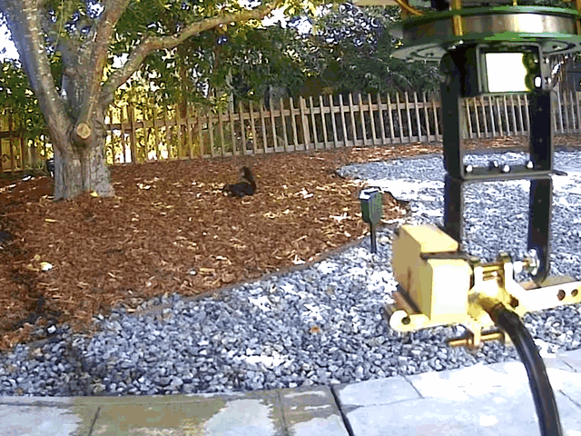

Squirrel turret
Placeholder. Posting the clips first. The calibration procedure, the detector training, the safety interlocks, and the open problems all still to come.
A pan/tilt water turret that watches the backyard, decides whether the thing moving out there is a squirrel, and points a hose at it.

It splits into two halves that turned out to be almost independent problems: detection (given a camera frame, is there a squirrel in it, and where?) and aiming (given a target location in the image, where do the servos need to point?).
Aiming had a shortcut worth mentioning. The obvious approach is to recover depth from the
camera, solve the camera-to-turret transform, then model the water's trajectory — three hard
calibrations multiplied together. But the camera never moves, which means a pixel already
encodes a ground location, and the whole chain collapses into one empirical lookup table:
pixel → pan/tilt servo command. You walk a grid of image cells, jog the turret
until the water lands in each one, and record the command. The table is the calibration —
pressure sag and droplet drag are just baked into the numbers.
Full footage
More of it running — the overhead camera, the infrared stream the detector works from, and the turret firing from ground level.